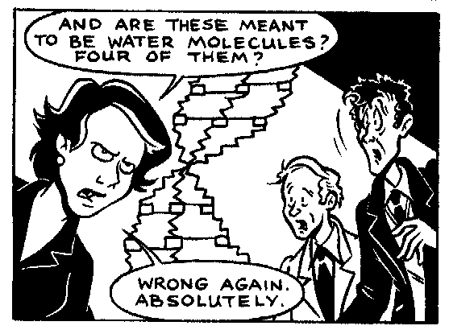

There are two reviews here:
Title: High Resolution X-ray Diffractometry and Topography
Authors: D.K.Bowen, B.K.Tanner
Publisher: Taylor and Francis, Jan 1998
ISBN 0 85066 758 5 hardback £49.95 256 pages
In the words of the authors, 'the purpose of the book is to provide the theoretical and practical background necessary to the study of single crystal materials by means of high resolution x-ray diffraction and topography'; they superbly achieve that aim. The book is an excellent combination of theoretical background and practical details. The book is well illustrated throughout with clear figures and diagrams, and many examples of data or meaningful simulations. There is sufficient theoretical background for the book to appeal to researchers not directly involved in the field, and so will be a value to a wide range of academic post-graduates and industrial researchers. The book contains substantially more relevant practical and experimental details, illustrated and supported well by real examples, than one would normally expect to find. This is one of the books real strengths. For me this justifies its publication and price, and guarantees a broad appeal.
There is an excellent chapter on X-ray scattering theory, and the chapter on the simulation of x-ray diffraction rocking curves will be invaluable for those wishing to pursue a detailed evaluation of their data. In the context of the development of advanced materials and devices, the chapters on the analysis of thin films and multiple layers, and of epitaxial layers are particularly important. The description of high resolution x-ray diffraction techniques is typically thorough, and contains much practical advice and information.
I am even less familiar with the field of X-ray topography, but the three chapters on single and double crystal X-ray topography, and on synchrotron radiation based X-ray topography very impressively demonstrate the power of the technique for visualising strain distributions.
The availability of advanced synchrotron radiation facilities does clearly provide some impetus to the further development and utilisation of these techniques. However, the authors do quite correctly stress that much of the vital routine work can be done most effectively on modern laboratory based sources.
I have only one minor criticism. The comparison of radiation's for diffraction in the introductory chapter rather downplays the potential and the contribution of neutron diffraction. Although it is undoubtedly true that you should always use x-rays in preference to neutrons if it is appropriate, neutrons have and do play an important role in diffraction studies.
In summary, this is an excellent book which is well written, contains a wealth of practical details, a sound theoretical basis, and should appeal to academic post-graduate and industrial scientists alike.
J.Penfold,
ISIS Facility, RAL, CLRC
5th May 200
Editor's Note: This book is also available from Bede Scientific
Instruments Ltd and can be ordered over the Internet from their web site at
http://www.bede.com or that of the
publisher at http://www.tandf.co.uk
Title: Dignifying Science
Author: Jim Ottaviani with various illustrators
Publisher: GT Labs, August 1999 paperback price US $ 16.95
ISBN 0-9660106-1-2 142 pages size (6½ by 10 inches) (167 x 255mm)
G.T.Labs publish books about famous scientists in the format of a comic strip. They have published several other books, e.g. 'Safecracker. A two fisted science comic about some of the well documented exploits of the physicist Richard Feynman.
Although most of the book is drawings, there is some text containing their
references and suggestions for further reading. There are also substantial
notes for each chapter. They say in the preface 'All the characters
and most of the likenesses in this book are based on historical figures, and
we've tried to give a realistic sense of their life and work. But though
based on fact this book is in equal measures history and historical fiction.
Real events interweave with those we imagined for dramatic purposes, and
documented quotes mix with our interpretations of thoughts and actions.'
The six scientists in this book are women; the prologue shows us Marie Skoldowska (later Curie) struggling to keep warm in Paris with a memorable illustration of just one very small lump of coal left in her huge coal scuttle. The others are Hedy Lamarr, Lise Meitner, Rosalind Franklin, Barbara McClintock and Biruté Galdikas. They all had a single minded enthusiasm for their chosen science with differing problems to overcome in order to be able to do their own research. The only crystallographer is Rosalind Franklin; her story is told by Madame Weil, a friend from the happy days she spent working in Paris. Three different illustrators contribute differing views of her work as seen by the three scientists Crick, Wilkins and Watson during the time she was taking the early photographs of DNA which contributed to the discovery of its helical structure.

This drawing (from page 65 ) shows Rosalind on a visit to Cambridge looking
critically at one of the early models made by Crick and Watson, who
initially built models based on geometry without fully considering the
chemical properties of the molecules.
I enjoyed this book once I had overcome my astonishment that comic strips
can contain an accurate scientific message, and are not just depicting
fanciful science fiction.
G.T. Labs offer discounts to educators who buy five or more copies, so these books may be an ideal way to introduce school children to the idea that scientists are not a race apart but are just like other comic strip personalities; further details can be found on their website at http://www.gtlabs.com
Kate Crennell
Page last updated 25 June 2000
 Click here to return to BCA homepage
Click here to return to BCA homepage